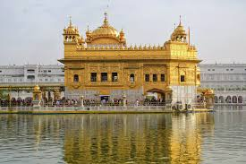

About the Golden Temple
The Golden Temple, also known as Harmandir Sahib, is the most sacred religious site for Sikhs, located in Amritsar, Punjab. Its stunning golden-plated architecture, serene Amrit Sarovar (holy tank), and spiritual atmosphere attract millions of devotees and tourists worldwide. The temple is not just a place of worship but a symbol of equality, peace, and brotherhood.
Visiting Information
- Location: Amritsar, Punjab, India
- Timings: Open 24 hours, every day
- Entry Fee: Free (all visitors welcome)
- Best Time to Visit: November – March (cool weather and festivals)
Highlights
- Golden-plated sanctum surrounded by the holy Amrit Sarovar.
- World’s largest free community kitchen (Langar) serving thousands daily.
- Enchanting night view when the temple glows with golden reflections.
- Peaceful prayers and soulful Gurbani recitations throughout the day.
Travel Information
- Nearest Railway Station: Amritsar Junction (~2 km)
- Nearest Airport: Sri Guru Ram Dass Jee International Airport, Amritsar (~13 km)
- Local Transport: Auto-rickshaws, taxis, and cycle rickshaws are easily available. Many hotels provide shuttle services.
- Accommodation: Budget hotels, mid-range stays, and luxury hotels are available within walking distance. The temple itself offers free accommodation for pilgrims.
- Average Daily Expense: ₹2,000 – ₹5,000 depending on stay and transport.